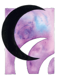
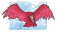
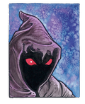
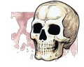
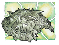
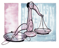
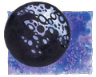

II. Karanlığın Tanrıları
Kraliçe Takhisis (Karanlıklar Kraliçesi): Takhisis kötülüğün somutlaştırılmış şeklidir. Sadece ahmaklar ve çocuklar onun adını açıkça söyleyebilirler. Adı karanlığı, yıkımı ve ölümü çağrıştırır. Takhisis Şövalyeleri ve tüm diğer kötü oluşumların başıdır. Kontrolü altındaki alanlar arasında gece, kötü ejderhalar, nefret, entrika ve kaos vardır. Sembolü siyah hilaldir. Renkleri siyah ya da parlak siyahtır. Takımyıldızı, Beş Kafalı Ejderha takımyıldızıdır. Takhisis'in en sevdiği iki avatar şekli vardır; biri beş kafalı bir kromatik ejderha, diğeriyse güzelliğiyle cezbeden bir kadındır. Diğer isimleriyse bölgelerine göre şunlardır: Ejderha Kraliçe (Ergoth, Silvanesti), Tii'Mhut (İstar), Birçok Yüzün Tanrısı (Hylo), Mai-tat (Tarsis), Fesat Nilat (Buzduvarı, Bozkırlı), Sahte Metal Tamex (Thorbardin), Hem Bütün Reklerin Hem de Hiçbirinin Kraliçesi (Solamniya), Leydi Kaos (Mithas), Karanlıkleydi (Ogre), Mwarg (Hobgoblin).
Sargonnas (Karanlık İntikam): Takhisis'in eşi olan Sargonnas hakkında pek fazla şey bilinmemektedir. Sargonnas çabuk öfkelenen ve hain bir tanrıdır. Sinirlendiğinde yolundaki her şeyi yok ederek ilerler ya da müritlerine bu işi yaptırır. Kendisine yapılan bir şeyin intikamını yüzyıllar geçse de almaya çabalar. Kontrolü altındaki alanlar arasında intikam, yıkım, entrika, volkanlar, ateş ve çöller vardır. Sembolleri bir kırmızı akbaba ya da bir kırmızı yumruk (Thorbardin, İstar) dır. Renkleri kırmızı ve kükreyen bir sese sahip lavdan oluşma bir ateş elementalidir. Diğer isimleriyse bölgelerine göre şunlardır: Argon (İstar, Ergoth), Ateşgetirici (Hylo), Misal-Lasim (Tarsis), Arzulu Gonnas (Buzduvarı), Bükümcü Sargonax (Thorbardin), Kinthalas (Silvanesti), Kinis (Qualinesti), Yokedici (Mithas).
Morgion (Kara Rüzgar): Morgion, hastalık ve çürümüşlüğün tanrısıdır. Tüm diğer tanrıların eşliğini kabul etmemiş ve onlarla planlarını tartışmamıştır. Düşüncelerini sadece sadık müritleriyle paylaşır. Gizlilik Morgion'un yoludur. Kontrolü altındaki alanlar arasında hastalık, çürüme, salgın, zayıflık ve suikast vardır. Sembolleri iki kırmızı gözlü bir kukuleta, baş aşağı duran bir balta (Thorbardin) ya da bir sıçan pençesi (Hylo) dir. Renkleri koyu kahverengi ve siyahtır. Takımyıldızı taçlı, örtülü bir kafa görüntüsü üzerinde kırmızı iki gözü şeklindedir. En çok kullandığı avatarları, kırmızı iki gözü olan yoğun, kara bir bulut ve siyah kapüşonlu ya da peçeli bir rahibe ya da cellattır. Diğer isimleriyse bölgelerine göre şunlardır: H'rar (Ergoth, İstar), Gormion (Tarsis), Morgi (Buzduvarı), Paslordu Morgax (Thorbardin), Veba (Mithas), Keçilordu Anthrax (Hobgoblin).
Chemosh (Ölümün Lordu): Chemosh, Krynn üzerindeki tüm namevtlerin tanrısıdır. Chemosh ele geçirmek istediklerini "sonsuz yaşam" ile kandırır ve daha sonra da o kişileri namevt ordusuna katar. Kontrolü altındaki alanlar arasında tüm namevtler, yağmalayıcılar ve düşmanlar vardır. Sembolü sarı bir kurukafadır. Renkleri siyah ve soluk sarıdır. Takımyıldızı bir kurukafa şeklindedir. Avatar olarak dolaştığında siyah cübbeler içinde çok yakışıklı bir adam ya da üzeri değerli takılarla kaplı bir lich görünür. Diğer isimleriyse bölgelerine göre şunlardır: Aeleth (Ergoth), Derinlerin Dron'u (Tarsis), Chemos Joton (Buzduvarı), Khemax (Thorbardin), Yaşamfelaketi (Mithas), Orkrust (Hobgoblin).
Zeboim (Karanlık Deniz): Zeboim, Takhisis ve Sargonnas'ın kızı ve Denizlerin Kraliçesi'dir. Oldukça az sayıda rahibi olan Zeboim'in nasıl davranacağı belli olmadığından ölümcül bir düşman ve tehlikeli bir dosttur. En büyük düşmanı Habbakuk'tur, çünkü denizlerin tek hakimi olmak istemektedir. Cücelerin kendisi hakkında çok az şey bilmelerinden dolayı, onları su üzerinde doğrudan dibe batmakla lanetlemiştir. Kontrolü altındaki alanlar arasında denizler, fırtınalar, kasırgalar, hava olayları, namevt deniz yaratıkları ve kıskançlık vardır. Sembolü bir deniz kaplumbağası kabuğunun kabartmasıdır. Renkleri yeşil ve kırmızıdır. Takımyıldızı bir deniz kaplumbağası şeklindedir. Avatar olarak insan şeklindedir, fakat en sevdiği hali güzel bir bayan suratına sahip dev bir deniz kaplumbağasıdır. Diğer isimleriyse bölgelerine göre şunlardır: Rann (Ergoth), Zyr (Tarsis), Zebir Jotun (Buzduvarı), Bhezomiax (Thorbardin), Girdap (Mithas).
Hiddukel (Yalanlar Prensi): Hiddukel, haksız kazancın, bahislerin ve yalanın tanrısıdır. Hiddukel yaşayan ruhların ticaretini yapar. Girdiği bir bahis sonucu Gritaş'ın yapılmasını sağlamıştır. Kontrolü altındaki alanlar arasında iş uygulamaları, lanetli ruhlar, aç gözlülük, kölelik ve ihanet vardır. Sembolü kırık çift kefeli bir esnaf terazisidir. Renkleri kırmızı ve kemik rengidir. Takımyıldızı kırık bir terazi görünümündedir. Avatar olarak kendisine çok şişman olan, soğuk bakışlı, boncuk gözlü ve yağcı bir gülümsemeye sahip bir insan seçer. Diğer isimleriyse bölgelerine göre şunlardır: İhanetçi (Mithas), Usk-Do (Hobgoblin), Kusurlu Hitax (Thorbardin), M'Fistos (İstar).
Nuitari (İç Kemirici Karanlık): Nuitari, kara büyünün tanrısıdır ve büyüsüne duyduğu aşk yüzünden diğer kötülük tanrıları kadar kötülükle kararmamıştır. Diğer büyü tanrıları gibi, kendi aleminden ayrılmış ve Ölümlü Krynn'e yakın bir yer kendisine seçmiştir. Bu kara ay sadece kendi müritleri tarafından görülebilir. Kara Cübbeliler'in tanrısıdır. Kontrolü altındaki alan sadece karanlık büyüdür. Sembolü siyah daire ya da küredir. Rengi siyahtır. Takımyıldızı yoktur, sadece siyah ay şeklinde Krynn'in gökyüzünde görünür. Avatar olarak kendisine siyah cübbeler içinde kabarık siyah saçlı, sessiz, güçlü bir genç adam seçtiği gibi bir yaramaz ve kötü bir çocuk da seçebilir. Diğer isimleriyse bölgelerine göre şunlardır: Geceyağmacısı (Mithas), Karanlık (Elian), Siyah El (Balifor), Tanrı Olmayan (Thorbardin).